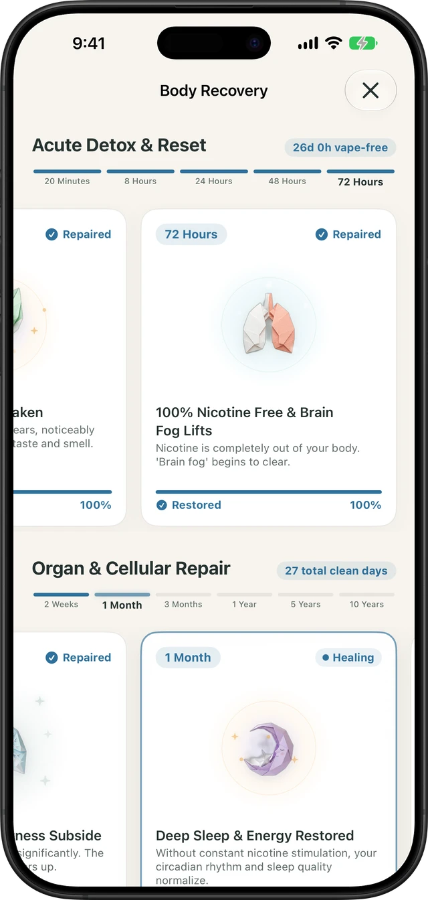

If your favorite pod suddenly tastes like warm, flavorless air—or your morning coffee and meals taste muted—you are experiencing Vaper's Tongue (clinically related to transient hypogeusia and olfactory adaptation). While harmless in the short term, it is a biological warning sign that your oral mucosa and nasal olfactory receptors are overstimulated and dehydrated.
Below is the exact physiological mechanism behind flavor loss, a side-by-side recovery timeline, and the evidence-based steps to restore your taste sensitivity fast.
| Biological Cause | What Happens in Your Mouth & Nose | Recovery Window | Immediate Fix |
|---|---|---|---|
| 1. PG/VG Hygroscopic Dehydration | Propylene glycol and vegetable glycerin absorb water molecules from saliva, leaving taste pores dry and unable to dissolve flavor compounds | 4 to 12 Hours | 500mL water + electrolytes; xylitol lozenges to stimulate salivary glands |
| 2. Olfactory Receptor Adaptation | Up to 80% of perceived flavor comes from smell; continuous sucralose and koolada (WS-23 ice) aerosols cause neural desensitization | 24 to 48 Hours | Inhale whole coffee beans or fresh lemon rind; eliminate sweet/menthol pods |
| 3. Lingual Biofilm Coating | Heated vegetable glycerin leaves a microscopic lipid-like film across fungiform papillae on the tongue surface | 12 to 24 Hours | Mechanical tongue scraping + warm saline rinse morning and night |
| 4. Nicotine Vasoconstriction | 50mg/mL nicotine salts constrict micro-capillaries supplying blood to taste buds, slowing cellular turnover | 72 Hours to 14 Days | Complete nicotine break (see full 72-hour detox timeline) |
Why Disposable Vapes Trigger Vaper's Tongue Faster Than Ever
Modern disposable vapes (such as Elf Bar, Geek Bar, and Lost Mary) contain 3 to 5 times higher sucralose and synthetic cooling agents (WS-23) than traditional refillable e-liquids. When you inhale these super-concentrated aerosols every 15 minutes, two mechanisms shut down your flavor perception simultaneously:
- Saliva Depletion (Xerostomia): Taste buds can only detect chemical molecules when they are dissolved in watery saliva. Propylene glycol (PG) is a humectant—it binds to water molecules on your tongue and exhales them as vapor cloud, leaving your taste pores sealed and dry.
- Olfactory Habituation: Just as your nose stops noticing a strong perfume five minutes after spraying it, your olfactory bulb down-regulates its signal output when bombarded with identical artificial fruit or ice esters all day.
The 5-Step Protocol to Cure Vaper's Tongue in 24–72 Hours
- Rehydrate with Electrolytes (Not Just Plain Water): Sipping plain water washes over aVG-coated tongue without penetrating the mucosa. Drink 500mL of water mixed with a pinch of sea salt and fresh lemon juice—citric acid immediately triggers parotid salivary gland secretion.
- Scrape Away the Vegetable Glycerin Film: Use a stainless steel or copper tongue scraper from back to front for 30 seconds after brushing. Follow with an alcohol-free warm salt water rinse (1/2 teaspoon salt in 8 oz warm water) to strip away thickened mucus and VG residue.
- Perform an Olfactory Palate Reset: Slowly smell freshly roasted whole coffee beans, sliced ginger, or fresh citrus peel for 60 seconds. Sharp, contrasting natural aromatics force your olfactory bulb to break out of single-flavor habituation.
- Chew Sugar-Free Xylitol Gum or Tart Citrus: Xylitol and sour foods stimulate sustained, enzyme-rich saliva flow that flushes clogged taste pores.
- Take a 72-Hour Vaping Reset: No home remedy can outpace continuous 50mg nicotine salt inhalation. Giving your oral tissue a 72-hour break allows 100% of nicotine to clear your bloodstream and triggers rapid taste receptor regeneration.
Built into Quit Vaping
Watch your taste & smell regenerate in real time
Track your 72-Hour Taste & Smell Recovery milestone, Nicotine Clearance (8h–72h), and Dopamine Reset on iPhone—100% private, offline, and account-free.
Track My 72-Hour Reset Free on iOS →
Taste Bud Recovery Timeline After Stopping Vaping
Taste receptor cells are among the fastest-regenerating cells in the human body, replacing themselves completely every 10 to 14 days:
- Hours 1 to 12: Salivary gland production rebounds; dry mouth and thick throat coating subside.
- Hours 24 to 48: Olfactory nerve adaptation lifts; subtle aromas in coffee, herbs, and fresh air return.
- Hour 72 (Day 3): Nicotine clears the bloodstream completely; micro-circulation to lingual papillae normalizes, and acute Vaper's Tongue resolves for over 85% of users.
- Days 10 to 14: Brand-new taste receptor cells mature across the tongue, restoring baseline sensitivity to natural sweet, salty, and umami flavors without needing artificial sweeteners.